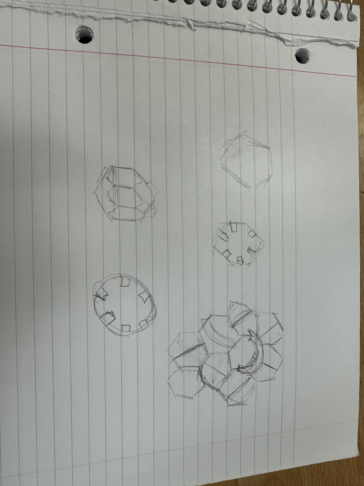
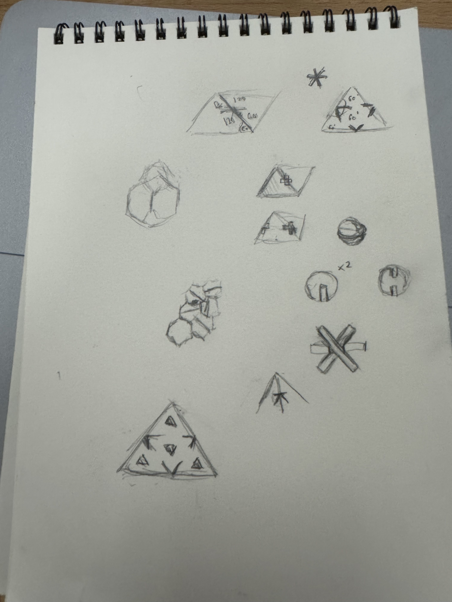
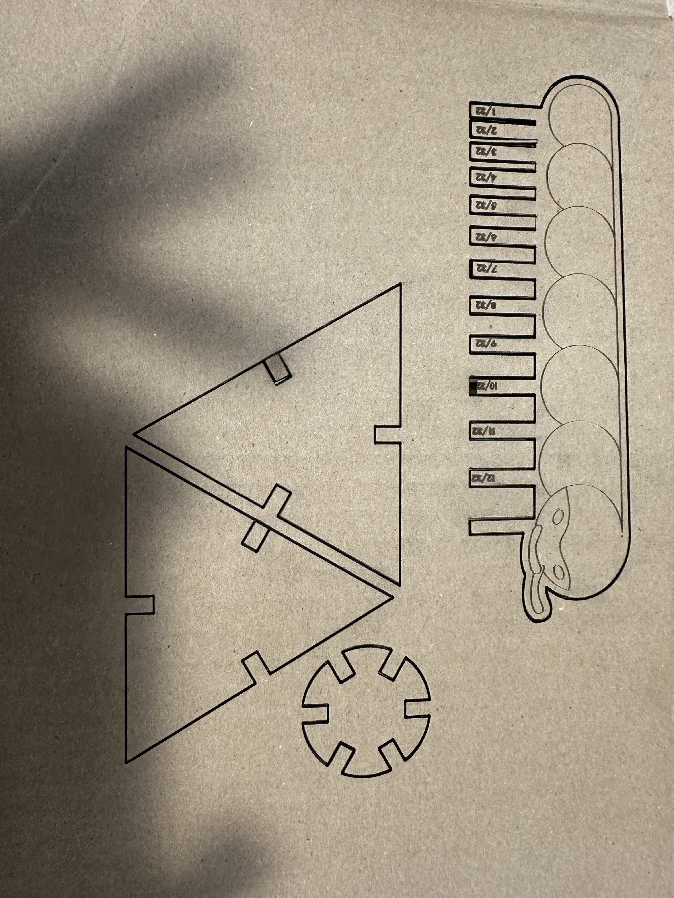
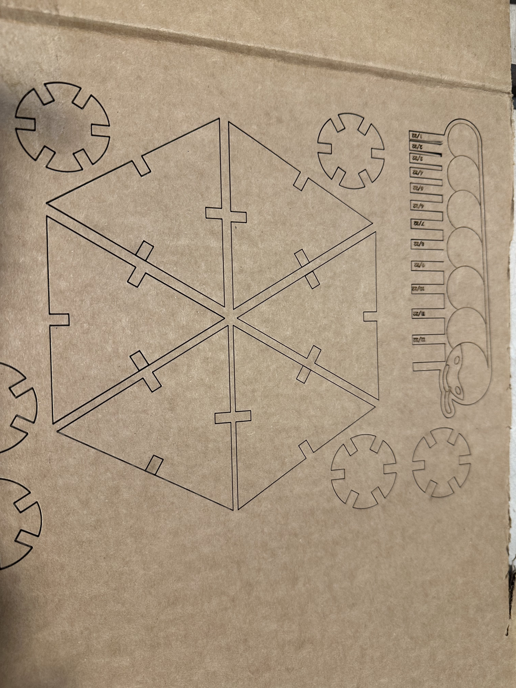
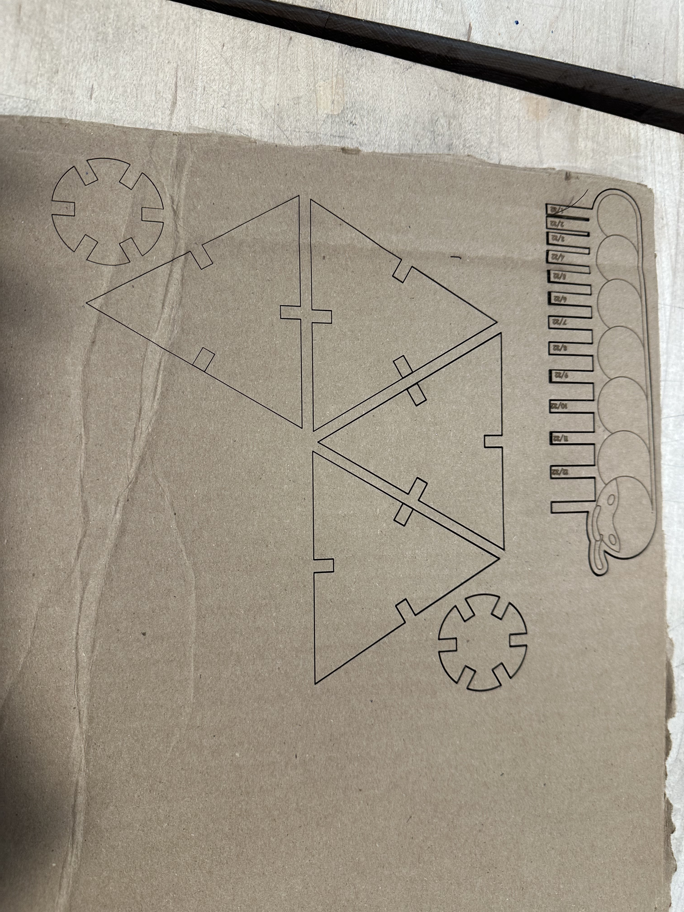
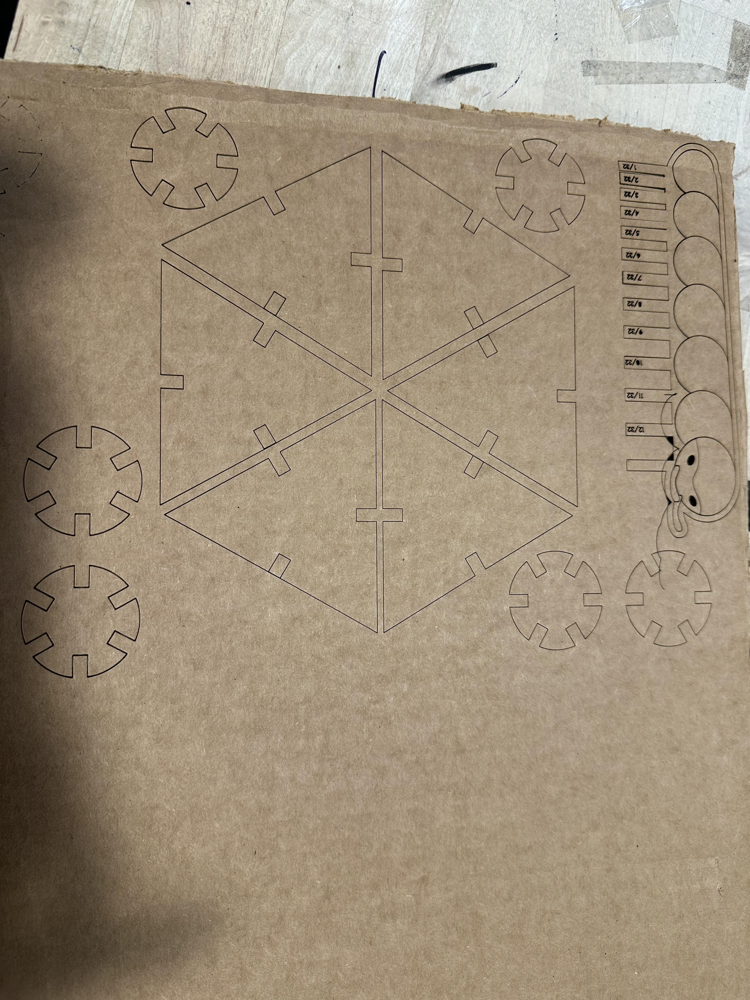
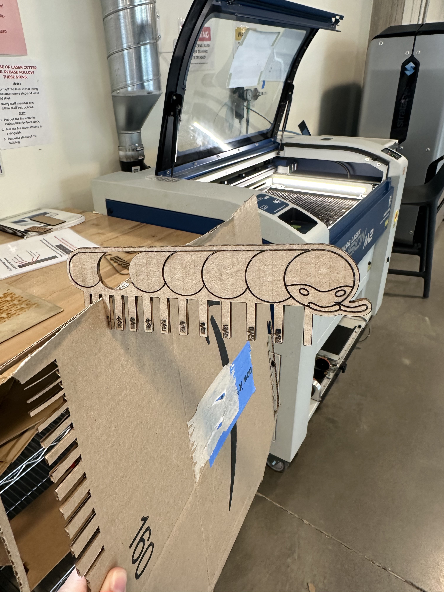
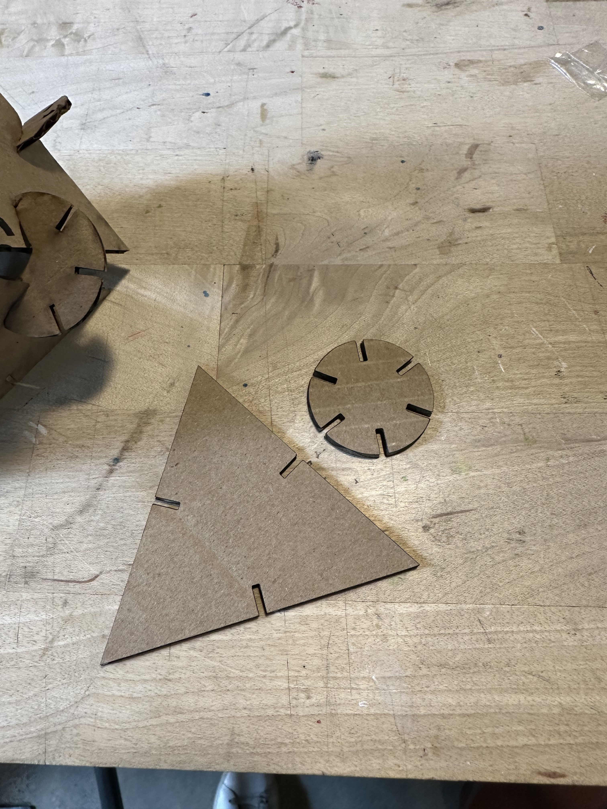
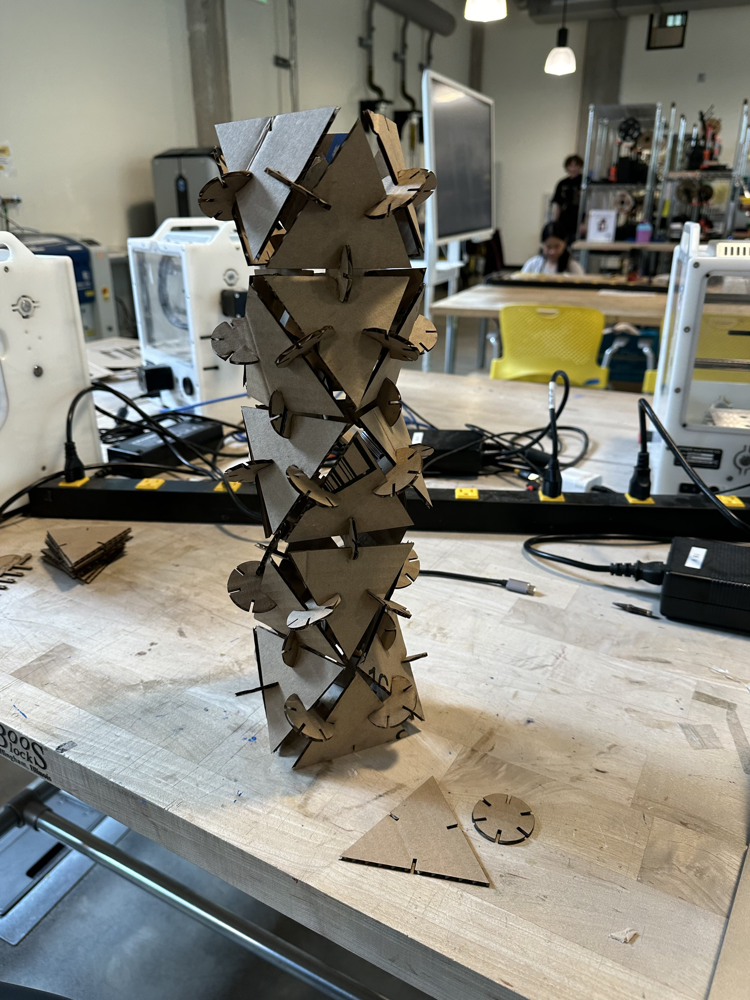

A1: Modelling and Laser Cutting!
Make a kit consisting of at least 30 instances of at least one unique part! The parts must have slots that press fit into the other parts in the kit! The parts must be laser cut out of cardboard! Your fit should be such that the parts do not come apart with a light shaking! You must model your parts!
Documentation:
 Inital sketches: Initially played around with the idea of hexagons with connectors weaving in and out of the planes made by the hexagons. However I eventually decided on triangles instead as they allowed alot more flexability when creating 3D stuctures. The odd number of sides meant I had to rethink the connectors. The connecors had notches every 60 degrees to allow more flexability when arranging pieces. I tried looking at a 12 notch option for the connectors but decided it may make the overall conector too weak stucutally.
   
Lazer settings: Started with the C flute and e flute provided settings for lazer cutting. which did not cut through. Increaded the power and decreased the speed, which did not work either. After speaking to Eva and Gina to troubleshoot, I increased the power to 70.
 
Readjusted the rastor settings back down after my tolerance tester millipede fell apart. And started cutting my pieces out after adjusting for tolerance. First trial pieces were a little difficult to slot together, so I rounded the edges 0.4mm. or 0.015748".



Final product: It survived testing! tolerances could be further adjusted, but hard to tell due to spongey and imperfect nature of the cardboard used.
Source Files:
https://assets.adobe.com/id/urn:aaid:sc:US:9eae7637-cde9-40a6-9cef-17d6a8787862?view=published
https://assets.adobe.com/id/urn:aaid:sc:US:8d4f2712-3ea2-4a7c-adcd-d5cc3657145c?view=published
Laser Cutting Settings:
For Vector:
Speed: 20
power: 70
frequency: 50
For Rastor:
Speed: 20
power: 20